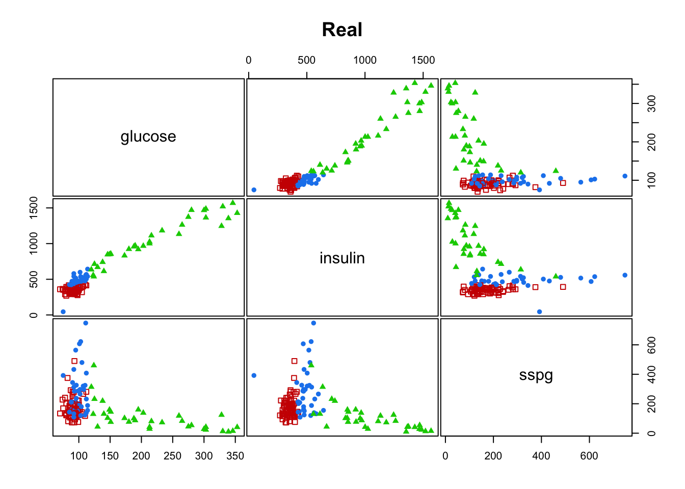
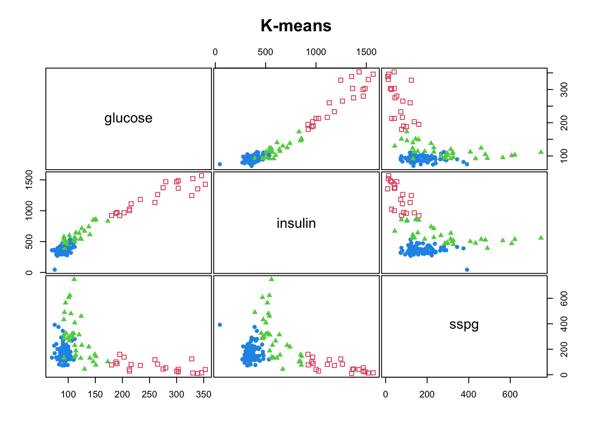
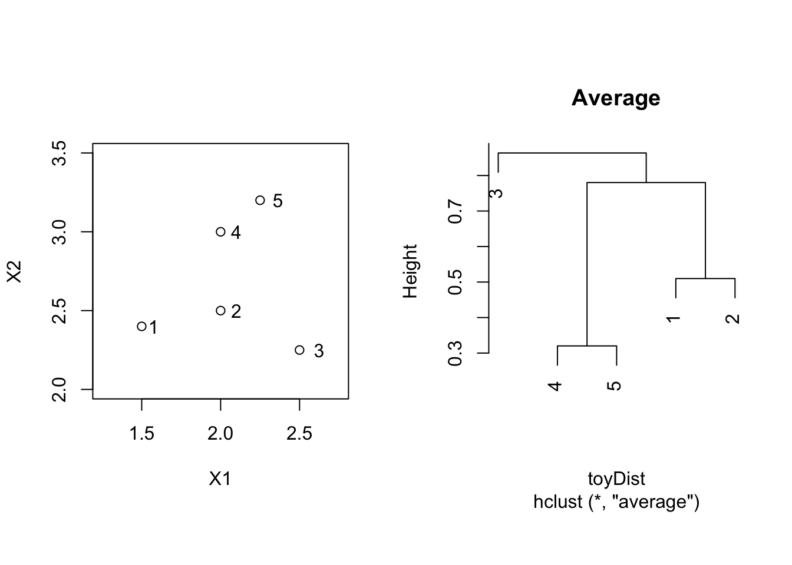
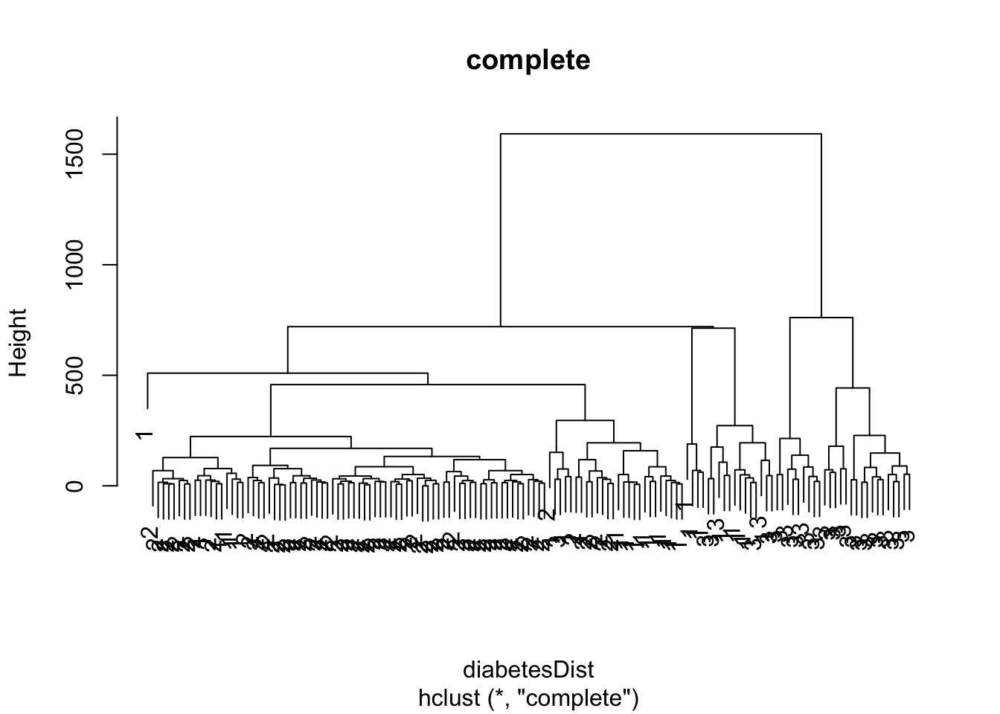

Introduction to Clustering
Lieven Clement
1 Introduction
1.1 Objective
Objective: grouping of observations into clusters, so that
- similar observations appear in the same cluster
- dissimilar observations appear in distinct clusters
\(\longrightarrow\) need for a measure for similarity and dissimilarity?
1.2 Example 1
Single cell transcriptomics: \(n \times p\) Matrix for which
every column contains the expression levels of one of \(p\) genes for \(n\) cells
every row contains the expression levels of \(p\) genes for one cell (sample)
Research question: look for groups of cells that have similar gene expression patterns
Or, look for groups of genes that have similar expression levels across the different cells. This can help us in understanding the regulation and functionality of the genes.
\(\longrightarrow\) both observations (rows) and variables (columns) can be clustered
1.3 Example 2
Abundance studies: the abundances of \(n\) plant species are counted on \(p\) plots (habitats)
- look for groups that contain species that live in the same habitats, or, look for groups of habitats that have similar species communities
\(\longrightarrow\) both observations (rows) and variables (columns) can be clustered
2 Partition Based Cluster Analysis
- Partition based cluster methods require the number of clusters (k) to be specified prior to the start of the algorithm.
2.1 K-means Methods
To use the k-means clustering algorithm we have to pre-define \(k\), the number of clusters we want to define.
The k-means algorithm is iterative.
The algorithm starts by defining k cluster centers (centroids).
Then the algorithm proceeds as follows
- First each observation is assigned to the cluster with the closest center to that observation.
- Then the k centers are redefined using the observations in each cluster, i.e. the multivariate means (column means) of all observations in a cluster are used to define each new cluster center.
- We repeat these two steps until the centers converge.
2.2 Example
#> class
#> Chemical Normal Overt
#> 36 76 33
#> K-means clustering with 3 clusters of sizes 26, 25, 94
#>
#> Cluster means:
#> glucose insulin sspg
#> 1 241.65385 1152.8846 75.69231
#> 2 105.04000 525.6000 375.96000
#> 3 93.39362 375.5213 166.17021
#>
#> Clustering vector:
#> 1 2 3 4 5 6 7 8 9 10 11 12 13 14 15 16 17 18 19 20
#> 3 3 3 3 3 3 3 3 3 3 3 3 3 3 3 3 3 3 3 3
#> 21 22 23 24 25 26 27 28 29 30 31 32 33 34 35 36 37 38 39 40
#> 3 3 3 3 3 3 3 3 3 3 3 3 3 3 3 3 3 3 3 3
#> 41 42 43 44 45 46 47 48 49 50 51 52 53 54 55 56 57 58 59 60
#> 3 3 3 3 3 3 3 3 3 3 3 3 3 3 3 3 3 3 3 3
#> 61 62 63 64 65 66 67 68 69 70 71 72 73 74 75 76 77 78 79 80
#> 3 3 3 3 3 3 3 3 2 3 2 3 3 3 3 3 3 3 3 3
#> 81 82 83 84 85 86 87 88 89 90 91 92 93 94 95 96 97 98 99 100
#> 3 2 3 3 3 2 2 3 2 2 2 2 2 2 2 3 2 2 2 2
#> 101 102 103 104 105 106 107 108 109 110 111 112 113 114 115 116 117 118 119 120
#> 2 2 3 3 3 2 3 2 3 3 2 3 1 1 2 1 1 1 1 1
#> 121 122 123 124 125 126 127 128 129 130 131 132 133 134 135 136 137 138 139 140
#> 1 1 1 3 1 1 1 1 1 1 2 1 1 3 3 2 2 1 1 1
#> 141 142 143 144 145
#> 1 1 1 1 1
#>
#> Within cluster sum of squares by cluster:
#> [1] 1738796.1 687281.9 947827.2
#> (between_SS / total_SS = 80.6 %)
#>
#> Available components:
#>
#> [1] "cluster" "centers" "totss" "withinss" "tot.withinss"
#> [6] "betweenss" "size" "iter" "ifault"mclust::clPairs(diabetes[,-1], diabetes$class, main = "Real"); mclust::clPairs(diabetes[,-1], diabetesKmeans$cluster,colors = c(2,3,4),symbols = c(0,17,16), main="K-means")
3 Hierarchical Cluster Analysis
- Distinction between agglomerative and divisive methods
- Agglomerative start from the situation where each individual observations forms its own cluster (so it starts with n clusters). In the next steps clusters are sequentially merged, until finally there is only one cluster with n observations.
- Divisive methods work just the other way around.
- The solution of an hierarchical clustering is thus a sequence of n nested cluster solutions.
3.1 General Algorithm of Agglomerative Hierarchical Clustering
In step 0 each observations is considered as a cluster (i.e. \(n\) clusters).
Every next step consists of:
- merge the two clusters with the smallest intercluster dissimilarity
- recalculate the intercluster dissimilarities
In step 0 the intercluster dissimilarity coincides with the dissimilarity between the corresponding observations
\(\rightarrow\) intercluster dissimilarity?
3.2 Intercluster Dissimilarities
Represent clusters (e.g. \(C_1\) and \(C_2\)) as sets of points \(\mathbf{x}_i\) which belong to that cluster
\(d(C_1,C_2)\): intercluster dissimilarity between
We consider three intercluster dissimilarities.
3.2.1 Single Linkage = Nearest Neighbour
\[ d(C_1,C_2) = \min_{\mathbf{x}_1 \in C_1; \mathbf{x}_2 \in C_2} d(\mathbf{x}_1,\mathbf{x}_2) , \]
i.e. the dissimilarity between \(C_1\) and \(C_2\) is determined by the smallest dissimilarity between a point of \(C_1\) and a point of \(C_2\).

3.2.2 Complete Linkage = Furthest Neighbour
\[ d(C_1,C_2) = \max_{\mathbf{x}_1 \in C_1; \mathbf{x}_2 \in C_2} d(\mathbf{x}_1,\mathbf{x}_2) , \] i.e. the dissimilarity between \(C_1\) and \(C_2\) is determined by the largest dissimilarity between a point of \(C_1\) and a point of \(C_2\).

3.2.3 Average Linkage = Group Average
\[ d(C_1,C_2) = \frac{1}{\vert C_1 \vert \vert C_2 \vert} \sum_{\mathbf{x}_1 \in C_1; \mathbf{x}_2 \in C_2} d(\mathbf{x}_1,\mathbf{x}_2) , \] i.e. the dissimilarity between \(C_1\) and \(C_2\) is determined by the average dissimilarity between all points of \(C_1\) and all points of \(C_2\).

3.3 Cluster Tree
Hierarchical nature of the algorithm:
Nested sequence of clusters \(\longrightarrow\) visualisation via a tree
Height of branches indicate the intercluster dissimilarity at which clusters are merged.
Can used as instrument for deciding the number of clusters in the data
4 Toy example
| X1 | X2 | label |
|---|---|---|
| 1.50 | 2.40 | 1 |
| 2.00 | 2.50 | 2 |
| 2.50 | 2.25 | 3 |
| 2.00 | 3.00 | 4 |
| 2.25 | 3.20 | 5 |

#> 1 2 3 4
#> 2 0.5099020
#> 3 1.0111874 0.5590170
#> 4 0.7810250 0.5000000 0.9013878
#> 5 1.0965856 0.7433034 0.9823441 0.32015624.1 Single linkage
toyDist <- toy[,1:2] %>% dist
toySingle <- hclust(toyDist, method = "single")
par(mfrow=c(1,2),pty="s")
plot(X2 ~ X1, toy, xlim = c(1.25,2.75),ylim = c(2,3.5))
text(toy$X1*1.05,toy$X2,label=toy$label)
plot(toySingle, main = "Single")
#> 1 2 3 4
#> 2 0.5099020
#> 3 1.0111874 0.5590170
#> 4 0.7810250 0.5000000 0.9013878
#> 5 1.0965856 0.7433034 0.9823441 0.32015624.2 Complete linkage
toyComplete <- hclust(toyDist, method = "complete")
par(mfrow=c(1,2),pty="s")
plot(X2 ~ X1, toy, xlim = c(1.25,2.75),ylim = c(2,3.5))
text(toy$X1*1.05,toy$X2,label=toy$label)
plot(toyComplete, main = "Complete")
#> 1 2 3 4
#> 2 0.5099020
#> 3 1.0111874 0.5590170
#> 4 0.7810250 0.5000000 0.9013878
#> 5 1.0965856 0.7433034 0.9823441 0.32015624.3 Average linkage
toyAvg <- hclust(toyDist, method = "average")
par(mfrow=c(1,2),pty="s")
plot(X2 ~ X1, toy, xlim = c(1.25,2.75),ylim = c(2,3.5))
text(toy$X1*1.05,toy$X2,label=toy$label)
plot(toyAvg, main = "Average")
#> 1 2 3 4
#> 2 0.5099020
#> 3 1.0111874 0.5590170
#> 4 0.7810250 0.5000000 0.9013878
#> 5 1.0965856 0.7433034 0.9823441 0.32015624.4 Example
diabetesDist <- dist(diabetes[,-1])
diabetesSingle <- hclust(diabetesDist, method = "single")
plot(diabetesSingle, labels = as.double(diabetes$class), main="single")
diabetesComplete <- hclust(diabetesDist, method = "complete")
plot(diabetesComplete, labels = as.double(diabetes$class), main="complete")
diabetesAverage <- hclust(diabetesDist, method = "average")
plot(diabetesAverage, labels = as.double(diabetes$class), main = "average",cex=0.5)
5 Model-based clustering
Session info
Session info
#> [1] "2024-10-07 12:41:04 CEST"#> ─ Session info ───────────────────────────────────────────────────────────────
#> setting value
#> version R version 4.4.0 RC (2024-04-16 r86468)
#> os macOS Big Sur 11.6
#> system aarch64, darwin20
#> ui X11
#> language (EN)
#> collate en_US.UTF-8
#> ctype en_US.UTF-8
#> tz Europe/Brussels
#> date 2024-10-07
#> pandoc 3.1.1 @ /Applications/RStudio.app/Contents/Resources/app/quarto/bin/tools/ (via rmarkdown)
#>
#> ─ Packages ───────────────────────────────────────────────────────────────────
#> package * version date (UTC) lib source
#> bookdown 0.40 2024-07-02 [1] CRAN (R 4.4.0)
#> bslib 0.8.0 2024-07-29 [1] CRAN (R 4.4.0)
#> cachem 1.1.0 2024-05-16 [1] CRAN (R 4.4.0)
#> cli 3.6.3 2024-06-21 [1] CRAN (R 4.4.0)
#> colorspace 2.1-1 2024-07-26 [1] CRAN (R 4.4.0)
#> digest 0.6.37 2024-08-19 [1] CRAN (R 4.4.1)
#> dplyr * 1.1.4 2023-11-17 [1] CRAN (R 4.4.0)
#> evaluate 1.0.0 2024-09-17 [1] CRAN (R 4.4.1)
#> fansi 1.0.6 2023-12-08 [1] CRAN (R 4.4.0)
#> farver 2.1.2 2024-05-13 [1] CRAN (R 4.4.0)
#> fastmap 1.2.0 2024-05-15 [1] CRAN (R 4.4.0)
#> forcats * 1.0.0 2023-01-29 [1] CRAN (R 4.4.0)
#> generics 0.1.3 2022-07-05 [1] CRAN (R 4.4.0)
#> ggplot2 * 3.5.1 2024-04-23 [1] CRAN (R 4.4.0)
#> glue 1.8.0 2024-09-30 [1] CRAN (R 4.4.1)
#> gtable 0.3.5 2024-04-22 [1] CRAN (R 4.4.0)
#> highr 0.11 2024-05-26 [1] CRAN (R 4.4.0)
#> hms 1.1.3 2023-03-21 [1] CRAN (R 4.4.0)
#> htmltools 0.5.8.1 2024-04-04 [1] CRAN (R 4.4.0)
#> jquerylib 0.1.4 2021-04-26 [1] CRAN (R 4.4.0)
#> jsonlite 1.8.9 2024-09-20 [1] CRAN (R 4.4.1)
#> knitr 1.48 2024-07-07 [1] CRAN (R 4.4.0)
#> labeling 0.4.3 2023-08-29 [1] CRAN (R 4.4.0)
#> lifecycle 1.0.4 2023-11-07 [1] CRAN (R 4.4.0)
#> lubridate * 1.9.3 2023-09-27 [1] CRAN (R 4.4.0)
#> magrittr 2.0.3 2022-03-30 [1] CRAN (R 4.4.0)
#> mclust 6.1.1 2024-04-29 [1] CRAN (R 4.4.0)
#> munsell 0.5.1 2024-04-01 [1] CRAN (R 4.4.0)
#> pillar 1.9.0 2023-03-22 [1] CRAN (R 4.4.0)
#> pkgconfig 2.0.3 2019-09-22 [1] CRAN (R 4.4.0)
#> purrr * 1.0.2 2023-08-10 [1] CRAN (R 4.4.0)
#> R6 2.5.1 2021-08-19 [1] CRAN (R 4.4.0)
#> readr * 2.1.5 2024-01-10 [1] CRAN (R 4.4.0)
#> rlang 1.1.4 2024-06-04 [1] CRAN (R 4.4.0)
#> rmarkdown 2.28 2024-08-17 [1] CRAN (R 4.4.0)
#> rstudioapi 0.16.0 2024-03-24 [1] CRAN (R 4.4.0)
#> sass 0.4.9 2024-03-15 [1] CRAN (R 4.4.0)
#> scales 1.3.0 2023-11-28 [1] CRAN (R 4.4.0)
#> sessioninfo 1.2.2 2021-12-06 [1] CRAN (R 4.4.0)
#> stringi 1.8.4 2024-05-06 [1] CRAN (R 4.4.0)
#> stringr * 1.5.1 2023-11-14 [1] CRAN (R 4.4.0)
#> tibble * 3.2.1 2023-03-20 [1] CRAN (R 4.4.0)
#> tidyr * 1.3.1 2024-01-24 [1] CRAN (R 4.4.0)
#> tidyselect 1.2.1 2024-03-11 [1] CRAN (R 4.4.0)
#> tidyverse * 2.0.0 2023-02-22 [1] CRAN (R 4.4.0)
#> timechange 0.3.0 2024-01-18 [1] CRAN (R 4.4.0)
#> tzdb 0.4.0 2023-05-12 [1] CRAN (R 4.4.0)
#> utf8 1.2.4 2023-10-22 [1] CRAN (R 4.4.0)
#> vctrs 0.6.5 2023-12-01 [1] CRAN (R 4.4.0)
#> withr 3.0.1 2024-07-31 [1] CRAN (R 4.4.0)
#> xfun 0.47 2024-08-17 [1] CRAN (R 4.4.0)
#> yaml 2.3.10 2024-07-26 [1] CRAN (R 4.4.0)
#>
#> [1] /Library/Frameworks/R.framework/Versions/4.4-arm64/Resources/library
#>
#> ──────────────────────────────────────────────────────────────────────────────